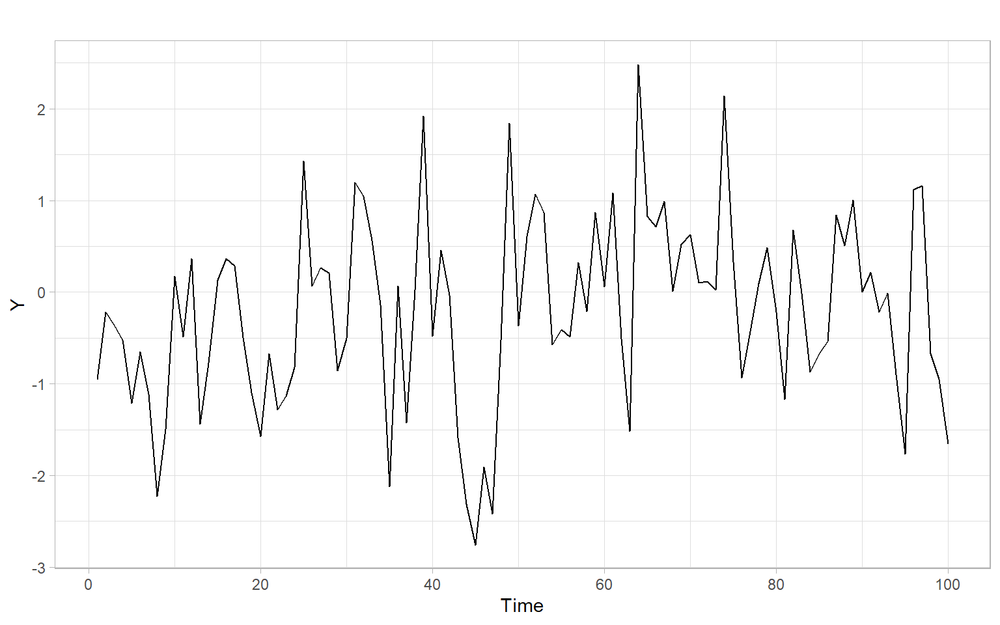

Code

This lecture demonstrates the effects of autocorrelation on the results of statistical tests for trend detection. You will recall the assumptions of the classical \(t\)-test and Mann–Kendall tests and will be able to suggest bootstrapped modifications of these tests to overcome the problem of temporal dependence. Moreover, you will become familiar with tests for non-monotonic parametric trends and stochastic trends.
Objectives
Reading materials
The majority of studies focus on the detection of linear or monotonic trends, using classical \(t\)-test or rank-based Mann–Kendall test, typically under the assumption of uncorrelated data.
There exist two main problems:
Hence, our goal is to provide reliable inference even for dependent observations and to test different alternative trend shapes.
The Student’s \(t\)-test for linear trend uses the regression model of linear trend \[ Y_t = b_0 + b_1 t + e_t, \] where \(b_0\) and \(b_1\) are the regression coefficients, \(t\) is time, and \(e_t\) are regression errors typically assumed to be homoskedastic, uncorrelated, and normally distributed.
The test hypotheses are
\(H_0\): no trend (\(b_1 = 0\))
\(H_1\): linear trend (\(b_1 \neq 0\))
Figure 7.1 shows a simulated stationary time series \(Y_t \sim \mathrm{AR}(1)\) of length 100 (notice the ‘burn-in’ period in simulations).
Apply the \(t\)-test to this time series \(Y_t\):
#>
#> Call:
#> lm(formula = Y ~ t)
#>
#> Residuals:
#> Min 1Q Median 3Q Max
#> -2.5115 -0.6106 0.0166 0.6808 2.5868
#>
#> Coefficients:
#> Estimate Std. Error t value Pr(>|t|)
#> (Intercept) -0.57984 0.20182 -2.87 0.005 **
#> t 0.00746 0.00347 2.15 0.034 *
#> ---
#> Signif. codes: 0 '***' 0.001 '**' 0.01 '*' 0.05 '.' 0.1 ' ' 1
#>
#> Residual standard error: 1 on 98 degrees of freedom
#> Multiple R-squared: 0.045, Adjusted R-squared: 0.0352
#> F-statistic: 4.62 on 1 and 98 DF, p-value: 0.0341Type I error (false positives) of this test is inflated due to the dependence effect (the assumption of uncorrelatedness is violated). Additionally, this test is limited only to detecting linear trends (see the alternative hypothesis \(H_1\)).
The Mann–Kendall test is based on the Kendall rank correlation and is used to determine if a non-seasonal time series has a monotonic trend over time.
\(H_0\): no trend
\(H_1\): monotonic trend
Test statistic: \[ S=\sum_{k=1}^{n-1}\sum_{j=k+1}^n sgn(X_j-X_k), \] where \(sgn(x)\) takes on the values of 1, 0, and \(-1\), for \(x>0\), \(x=0\), and \(x<0\), respectively.
Kendall (1975) showed that \(S\) is asymptotically normally distributed and, for the situations where there may be ties in the \(X\) values, \[ \begin{split} \mathrm{E}(S) &= 0, \\ \mathrm{var}(S) &= \frac{1}{18} \left[ n(n-1)(2n+5)-\sum_{j=1}^p t_j(t_j-1)(2t_j+5) \right], \end{split} \] where \(p\) is the number of tied groups in the time series, and \(t_j\) is the number of data points in the \(j\)th tied group.
Its seasonal version is the sum of the statistics for individual seasons over all seasons (Hirsch et al. 1982): \[ S=\sum_{j=1}^m S_j. \]
For data sets as small as \(n = 2\) and \(m = 12\), the normal approximation of the test statistic is adequate and thus the test is easy to use. The method also accommodates both
To apply the test, use the package Kendall. Also, note the statement about bootstrap in the help file for the function Kendall::MannKendall().
Kendall::MannKendall(Y)#> tau = 0.13, 2-sided pvalue =0.06This test is still limited to only monotonic trends and independent observations.
When some of the statistical assumptions are violated, we may switch to using other methods or try to accommodate these violations by modifying part of the existing method.
The seminal paper by Efron (1979) describes bootstrap for i.i.d. data. In two words, the idea is the following: we can relax distributional assumptions and reconstruct the distribution of the sample statistic by resampling data with replacement and recalculating the statistic over and over. The resampling step will give us artificial ‘new’ samples, while the statistics calculated multiple times on those samples will let us approximate the distribution of the statistic of interest. Thus, by repeating the resampling and estimation steps many times, we will know how the statistic is distributed, even if the sample is small and not normally distributed.
Let \(x_i\) (\(i = 1, \dots, n\)) be sample values collected from a non-normally distributed population using simple random sampling. If the sample size \(n\) is small, we cannot be sure that the distribution of sample averages \(\bar{x}\) is normal, so we will approximate it using the following bootstrapping steps:
We cannot apply the outlined bootstrapping directly to time series or spatial data because these data are not i.i.d. and resampling will break the order and dependence structure.
To account for the dependence structure, some modifications to the bootstrap procedure were proposed, including block bootstrap and sieve bootstrap (see Bühlmann 2002 and references therein).
While the bootstrap for independent data generates samples that mimic the underlying population distribution, the bootstrap for time series also aims to mimic or preserve the dependence structure of the time series. Hence, the first step of the outlined bootstrapping algorithm should be modified so that the generated bootstrapped samples preserve the dependence structure that we want to accommodate in our analysis. For example, if we want to accommodate serial dependence in the \(t\)-test, the bootstrapped time series should be autocorrelated similarly to the original series, so we can approximate the distribution of the test statistic when the assumption of independence is violated.
Block bootstrap works for general stationary time series or categorical series (e.g., genetic sequences). In the simplest version of the algorithm, the observed time series of length \(n\) is used to create overlapping blocks of fixed length \(l\), which are then resampled with replacement to create a bootstrapped time series. To match the original sample size, the last block entering the bootstrapped series can be truncated. By resampling blocks rather than individual observations, we preserve the original dependence structure within each block (Bühlmann 2002; Härdle et al. 2003).
Other versions of this algorithm include non-overlapping blocks and blocks of random length \(l\) sampled from the geometric distribution (the latter version is also known as the stationary bootstrap), but these versions often show poorer performance (Bühlmann 2002; Härdle et al. 2003).
The block length \(l\) should be adjusted each time to the statistic of interest, data generating process, and purpose of the estimation, such as distribution, bias, or variance estimation (Bühlmann 2002). In other words, \(l\) is the algorithm’s major tuning parameter that is difficult to select automatically. Bühlmann (2002) also points out the lack of good interpretations and reliable diagnostic tools for the block length \(l\).
Sieve bootstrap generally works for time series that are realizations of linear AR(\(\infty\)) processes (Bühlmann 2002), with more recent research extending the method to all stationary purely nondeterministic processes (Kreiss et al. 2011). In this algorithm, an autoregressive (AR) model acts as a sieve by approximating the dependence structure and letting through only the i.i.d. residuals \(\epsilon_t\). We then center (subtract mean) and resample with replacement the residuals (there is no more structure we need to preserve after the sieve, so this bootstrap step is no different from resampling i.i.d. data). We introduce these bootstrapped residuals \(\epsilon^*_t\) back into the AR(\(\hat{p}\)) model to obtain a bootstrapped time series \(X_t^*\): \[ X_t^* = \sum_{j=1}^{\hat{p}} \hat{\phi}_j X^*_{t-j} + \epsilon^*_t, \] where \(\hat{\phi}_j\) are the AR coefficients, estimated on the original time series \(X_t\), and \(\hat{p}\) is the selected AR order. The order \(p\) is the main tuning parameter in this algorithm, but as Bühlmann (2002) points out, it has several advantages compared with the block length in block bootstrap:
Other versions of sieve bootstrap include options of obtaining \(\epsilon^*_t\) from a parametric distribution (e.g., normal distribution with the mean of 0 and variance matching that of \(\epsilon_t\)) or nonparametrically estimated probability density (e.g., using kernel smoothing) for incorporating additional variability in the data.
Noguchi et al. (2011) enhanced the classical \(t\)-test and Mann–Kendall trend test with sieve bootstrap approaches that take into account the serial correlation of data to obtain more accurate and reliable estimates. While taking into account the dependence structure in the data, these tests are still limited to the linear or monotonic case:
\(H_0\): no trend
\(H_1\): linear trend (\(t\)-test) or monotonic trend (Mann–Kendall test)
Apply the sieve-bootstrapped tests to our time series data, using the package funtimes:
funtimes::notrend_test(Y, ar.method = "yw")#>
#> Sieve-bootstrap Student's t-test for a linear trend
#>
#> data: Y
#> Student's t value = 2, p-value = 0.1
#> alternative hypothesis: linear trend.
#> sample estimates:
#> $AR_order
#> [1] 1
#>
#> $AR_coefficients
#> phi_1
#> 0.344funtimes::notrend_test(Y, test = "MK", ar.method = "yw")#>
#> Sieve-bootstrap Mann--Kendall's trend test
#>
#> data: Y
#> Mann--Kendall's tau = 0.1, p-value = 0.2
#> alternative hypothesis: monotonic trend.
#> sample estimates:
#> $AR_order
#> [1] 1
#>
#> $AR_coefficients
#> phi_1
#> 0.344Notice the different \(p\)-values from the first time we applied the tests without the bootstrap.
Consider a time series \[ Y_t = \mu(t) + \epsilon_t, \tag{7.1}\] where \(t=1, \dots, n\), \(\mu(t)\) is an unknown trend function, and \(\epsilon_t\) is a weakly stationary time series.
We would like to test the hypotheses
\(H_0\): \(\mu(t)=f(\theta, t)\)
\(H_1\): \(\mu(t)\neq f(\theta,t)\),
where the function \(f(\cdot, t)\) belongs to a known family of smooth parametric functions \(S=\bigl\{f(\theta, \cdot), \theta\in \Theta \bigr\}\) and \(\Theta\) is a set of possible parameter values and a subset of Euclidean space.
Special cases include
The following local regression or the local factor test statistic was developed by Wang et al. (2008) to be applied to pre-filtered observations replicating the residuals \(\epsilon_t\) in Equation 7.1. The idea is to extract the hypothesized trend \(f(\theta,t)\) and group residual consecutive in time into small groups. Then, apply the ANOVA \(F\)-test for these artificial groups: \[ \begin{split} \mathrm{WAVK}_n&= F_n=\frac{\mathrm{MST}}{\mathrm{MSE}} \\ &= \frac{k_n}{n-1}\sum_{i=1}^n{\left( \overline{V}_{i.}-\overline{V}_{..}\right)^2\Big/ \frac{1}{n(k_n-1)}\sum_{i=1}^n\sum_{j=1}^{k_n}{\left(V_{ij}-\overline{V}_{i.}\right)^2}}, \end{split} \] where MST is the treatment sum of squares, MSE is the error sum of squares, \(\{V_{i1}, \dots, V_{ik_n}\}\) is \(k_n\) pre-filtered observations in the \(i\)th group, \(\overline{V}_{i.}\) is the mean of the \(i\)th group, \(\overline{V}_{..}\) is the grand mean.
Both \(n\to \infty\) and \(k_n\to \infty\); \(\rm{MSE}\to\) constant. Hence, we can consider \(\sqrt{n}(\rm{MST}-\rm{MSE})\) instead of \(\sqrt{n}(F_n-1)\).
Lyubchich et al. (2013) extended the WAVK approach:
The WAVK test is implemented in the package funtimes with the same sieve bootstrap as the \(t\)-test and Mann–Kendall test. It tests the null hypothesis of no trend vs. the alternative of (non)monotonic trend.
funtimes::notrend_test(Y, test = "WAVK", ar.method = "yw")#>
#> Sieve-bootstrap WAVK trend test
#>
#> data: Y
#> WAVK test statistic = 4, moving window = 10, p-value = 0.4
#> alternative hypothesis: (non-)monotonic trend.
#> sample estimates:
#> $AR_order
#> [1] 1
#>
#> $AR_coefficients
#> phi_1
#> 0.344Also, the version of the test with the hybrid bootstrap by Lyubchich et al. (2013) is available. This version allows the user to specify different alternatives.
# The null hypothesis is the same as above, no trend (constant trend)
funtimes::wavk_test(Y ~ 1,
factor.length = "adaptive.selection",
ar.method = "yw",
out = TRUE)#>
#> Trend test by Wang, Akritas, and Van Keilegom (bootstrap p-values)
#>
#> data: Y
#> WAVK test statistic = 0.1, adaptively selected window = 4, p-value =
#> 0.8
#> alternative hypothesis: trend is not of the form Y ~ 1.
#> sample estimates:
#> $trend_coefficients
#> (Intercept)
#> -0.203
#>
#> $AR_order
#> [1] 1
#>
#> $AR_coefficients
#> phi_1
#> 0.344
#>
#> $all_considered_windows
#> Window WAVK-statistic p-value
#> 4 0.1403 0.760
#> 5 -0.0495 0.862
#> 7 -0.0955 0.826
#> 10 -0.2146 0.866#>
#> Trend test by Wang, Akritas, and Van Keilegom (bootstrap p-values)
#>
#> data: Y
#> WAVK test statistic = 4, adaptively selected window = 4, p-value = 0.01
#> alternative hypothesis: trend is not of the form Y ~ poly(t, 2).
#> sample estimates:
#> $trend_coefficients
#> (Intercept) poly(t, 2)1 poly(t, 2)2
#> -0.203 2.152 -1.795
#>
#> $AR_order
#> [1] 0
#>
#> $AR_coefficients
#> numeric(0)
#>
#> $all_considered_windows
#> Window WAVK-statistic p-value
#> 4 3.76 0.010
#> 5 2.97 0.028
#> 7 1.81 0.086
#> 10 0.93 0.234For the application of this test to multiple time series, see Appendix C.
Statistical test results depend on the alternative hypothesis. Sometimes the null hypothesis cannot be rejected in favor of the alternative hypothesis because the data do not match the specified alternative. For example, there are numerous examples when in Pearson correlation analysis the null hypothesis of independence cannot be rejected in favor of the alternative hypothesis of linear dependence because the underlying nonlinear dependence cannot be described as a linear relationship. See this vignette describing a few similar cases for the time series.
By now, we have been identifying the order of integration (if a process \(X_t \sim\) I(\(d\))) by looking at the time series plot of \(X_t\) and (largely) by looking at the plot of sample ACF. We differenced time series again and again until we saw a stable mean in the time series plot and a rapid (compared with linear), exponential-like decline in ACF. Here, we present a hypothesis testing approach originally suggested by Dickey and Fuller (1979) (Dickey–Fuller test).
Let \(X_1, \dots, X_n\) be observations from an AR(1) model: \[ \begin{split} X_t-\mu & =\phi_1(X_{t-1}-\mu) + Z_t, \\ Z_t &\sim \mathrm{WN}(0,\sigma^2), \end{split} \] where \(|\phi_1|<1\) and \(\mu=\mathrm{E}X_t\). For a large sample size \(n\), the maximum likelihood estimator \(\hat{\phi_1}\) of \(\phi_1\) is approximately \(N(\phi_1, (1-\phi^2_1)/n)\). However, for the unit root case, this approximation is not valid! Thus, do not be tempted to use the normal approximation to construct a confidence interval for \(\phi_1\) and check if it includes the value 1. Instead, consider a model that assumes a unit root (\(H_0\): unit root is present) and immediately removes it by differencing: \[ \begin{split} \Delta X_t = X_t - X_{t-1} &= \phi^*_0 + \phi^*_1X_{t-1}+Z_t,\\ Z_t & \sim {\rm WN}(0,\sigma^2), \end{split} \tag{7.2}\] where \(\phi^*_0=\mu(1-\phi_1)\) and \(\phi_1^*=\phi_1 -1\). Let \(\hat{\phi}_1^*\) be the OLS estimator of \(\phi_1^*\), with its standard error estimated as \[ \widehat{\mathrm{SE}}\left( \hat{\phi}_1^* \right) = S\left( \sum_{t=2}^n \left(X_{t-1}-\bar{X} \right)^2 \right)^{-1/2}, \] where \(S^2=\sum_{t=2}^n\left( \Delta X_t - \hat{\phi}_0^* - \hat{\phi}_1^*X_{t-1}\right)^2/(n-3)\) and \(\bar{X}\) is the sample mean. Dickey and Fuller (1979) derived the limit distribution of the test statistic \[ \hat{\tau}_{\mu}=\frac{\hat{\phi}_1^*}{\widehat{\mathrm{SE}}\left( \hat{\phi}_1^* \right)}, \] so we know the critical levels from this distribution (the 0.01, 0.05, and 0.10 quantiles are \(-3.43\), \(-2.86\), and \(-2.57\), respectively) and can test the null hypothesis of \(\phi_1^*=0\) (notice the similarity with the usual \(t\)-test for significance of regression coefficients). An important thing to remember is that the \(H_0\) here assumes a unit root (nonstationarity).
For a more general AR(\(p\)) model, statistic \(\hat{\tau}_{\mu}\) has a similar form (the \(\phi_1^*\) is different: \(\phi_1^* = \sum_{i=1}^p\phi_i -1\)), and the test is then called the Augmented Dickey–Fuller test (ADF test). The order \(p\) can be specified in advance or selected automatically using AIC or BIC.
Another popular test for unit roots, the Phillips–Perron test (PP test), is built on the ADF test and considers the same null hypothesis.
The ADF and PP tests are asymptotically equivalent but may differ substantially in finite samples due to the different ways in which they correct for serial correlation in the test regression.
In general, the ADF and PP tests have very low power against I(0) alternatives that are close to being I(1). That is, unit root tests cannot distinguish highly persistent stationary processes from nonstationary processes very well. Also, the power of unit root tests diminishes as deterministic terms are added to the test regressions. Tests that include a constant and trend in the test regression have less power than tests that only include a constant in the test regression.
Temporal dependence of time series is the most violated assumption of classical tests often employed for detecting trends, including the nonparametric Mann–Kendall test. However, multiple workarounds exist that allow the analyst to relax (avoid) the assumption of independence and provide more reliable inference. We have implemented sieve bootstrapping for time series as one such workaround.
Test results depend on the specified alternative hypothesis. Remember that non-rejection of the null hypothesis doesn’t make it automatically true.
When testing for unit roots (integration) in time series, the null hypothesis of ADF and PP tests is the unit root, while the alternative is the stationarity of the tested series. Iterative testing and differencing can be used to identify the order of integration \(d\).